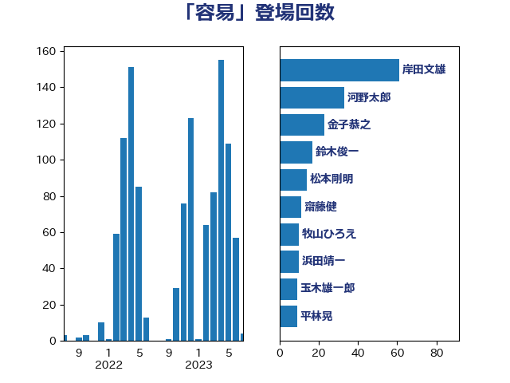

単語「容易」

| 岸田文雄 | 自由民主党 | 61 回 |
| 河野太郎 | 自由民主党 | 33 回 |
| 金子恭之 | 自由民主党 | 23 回 |
| 鈴木俊一 | 自由民主党 | 17 回 |
| 松本剛明 | 自由民主党 | 14 回 |
| 齋藤健 | 自由民主党 | 11 回 |
| 牧山ひろえ | 立憲民主党 | 10 回 |
| 浜田靖一 | 自由民主党 | 10 回 |
| 玉木雄一郎 | 国民民主党 | 9 回 |
| 平林晃 | 公明党 | 9 回 |
| 川合孝典 | 国民民主党 | 9 回 |
| 國重徹 | 公明党 | 9 回 |
| 阿部弘樹 | 日本維新の会 | 8 回 |
| 萩生田光一 | 自由民主党 | 8 回 |
| 林芳正 | 自由民主党 | 8 回 |
| 階猛 | 立憲民主党 | 7 回 |
| 西村康稔 | 自由民主党 | 7 回 |
| 田中健 | 国民民主党 | 7 回 |
| 浜田聡 | NHK党 | 7 回 |
| 岬麻紀 | 日本維新の会 | 7 回 |
| 宮本徹 | 日本共産党 | 7 回 |
| 三木圭恵 | 日本維新の会 | 7 回 |
| 高橋千鶴子 | 日本共産党 | 6 回 |
| 本庄知史 | 立憲民主党 | 6 回 |
| 山添拓 | 日本共産党 | 6 回 |
| 塩田博昭 | 公明党 | 6 回 |
| 住吉寛紀 | 日本維新の会 | 6 回 |
| 音喜多駿 | 日本維新の会 | 5 回 |
| 野村哲郎 | 自由民主党 | 5 回 |
| 藤巻健太 | 日本維新の会 | 5 回 |
| 田村まみ | 国民民主党 | 5 回 |
| 末次精一 | 立憲民主党 | 5 回 |
| 斎藤アレックス | 国民民主党 | 5 回 |
| 川田龍平 | 立憲民主党 | 5 回 |
| 小沼巧 | 立憲民主党 | 5 回 |
| 仁木博文 | 無所属 | 5 回 |
| 高木かおり | 日本維新の会 | 4 回 |
| 青柳仁士 | 日本維新の会 | 4 回 |
| 長友慎治 | 国民民主党 | 4 回 |
| 鎌田さゆり | 立憲民主党 | 4 回 |
| 鈴木義弘 | 国民民主党 | 4 回 |
| 金子道仁 | 日本維新の会 | 4 回 |
| 西岡秀子 | 国民民主党 | 4 回 |
| 米山隆一 | 立憲民主党 | 4 回 |
| 稲富修二 | 立憲民主党 | 4 回 |
| 福重隆浩 | 公明党 | 4 回 |
| 福田昭夫 | 立憲民主党 | 4 回 |
| 津島淳 | 自由民主党 | 4 回 |
| 沢田良 | 日本維新の会 | 4 回 |
| 江藤拓 | 自由民主党 | 4 回 |
| 日下正喜 | 公明党 | 4 回 |
| 斉藤鉄夫 | 公明党 | 4 回 |
| 山岸一生 | 立憲民主党 | 4 回 |
| 山井和則 | 立憲民主党 | 4 回 |
| 小林鷹之 | 自由民主党 | 4 回 |
| 小倉將信 | 自由民主党 | 4 回 |
| 室井邦彦 | 日本維新の会 | 4 回 |
| 堀場幸子 | 日本維新の会 | 4 回 |
| 吉田統彦 | 立憲民主党 | 4 回 |
| 北側一雄 | 公明党 | 4 回 |
| 井坂信彦 | 立憲民主党 | 4 回 |
| 井上哲士 | 日本共産党 | 4 回 |
| 高橋光男 | 公明党 | 3 回 |
| 高木宏壽 | 自由民主党 | 3 回 |
| 金城泰邦 | 公明党 | 3 回 |
| 谷公一 | 自由民主党 | 3 回 |
| 藤岡隆雄 | 立憲民主党 | 3 回 |
| 羽田次郎 | 立憲民主党 | 3 回 |
| 神谷宗幣 | 参政党 | 3 回 |
| 石川博崇 | 公明党 | 3 回 |
| 石井苗子 | 日本維新の会 | 3 回 |
| 田村智子 | 日本共産党 | 3 回 |
| 牧島かれん | 自由民主党 | 3 回 |
| 熊谷裕人 | 立憲民主党 | 3 回 |
| 浅野哲 | 国民民主党 | 3 回 |
| 梅村みずほ | 日本維新の会 | 3 回 |
| 杉尾秀哉 | 立憲民主党 | 3 回 |
| 本村伸子 | 日本共産党 | 3 回 |
| 後藤茂之 | 自由民主党 | 3 回 |
| 岸真紀子 | 立憲民主党 | 3 回 |
| 山田俊男 | 自由民主党 | 3 回 |
| 山本剛正 | 日本維新の会 | 3 回 |
| 山下貴司 | 自由民主党 | 3 回 |
| 尾崎正直 | 自由民主党 | 3 回 |
| 小西洋之 | 立憲民主党 | 3 回 |
| 小川淳也 | 立憲民主党 | 3 回 |
| 寺田静 | 無所属 | 3 回 |
| 宮本岳志 | 日本共産党 | 3 回 |
| 大塚耕平 | 国民民主党 | 3 回 |
| 塩川鉄也 | 日本共産党 | 3 回 |
| 三浦信祐 | 公明党 | 3 回 |
| 鬼木誠 | 立憲民主党 | 2 回 |
| 須藤元気 | 無所属 | 2 回 |
| 鈴木敦 | 国民民主党 | 2 回 |
| 鈴木庸介 | 立憲民主党 | 2 回 |
| 西田実仁 | 公明党 | 2 回 |
| 若宮健嗣 | 自由民主党 | 2 回 |
| 舩後靖彦 | れいわ新選組 | 2 回 |
| 神津たけし | 立憲民主党 | 2 回 |
| 石橋通宏 | 立憲民主党 | 2 回 |
| 石原正敬 | 自由民主党 | 2 回 |
| 滝沢求 | 自由民主党 | 2 回 |
| 渡辺創 | 立憲民主党 | 2 回 |
| 清水真人 | 自由民主党 | 2 回 |
| 浜地雅一 | 公明党 | 2 回 |
| 池下卓 | 日本維新の会 | 2 回 |
| 江田憲司 | 立憲民主党 | 2 回 |
| 櫛渕万里 | れいわ新選組 | 2 回 |
| 榛葉賀津也 | 国民民主党 | 2 回 |
| 梅谷守 | 立憲民主党 | 2 回 |
| 柴山昌彦 | 自由民主党 | 2 回 |
| 柳ヶ瀬裕文 | 日本維新の会 | 2 回 |
| 柚木道義 | 立憲民主党 | 2 回 |
| 木村次郎 | 自由民主党 | 2 回 |
| 早稲田ゆき | 立憲民主党 | 2 回 |
| 掘井健智 | 日本維新の会 | 2 回 |
| 徳永久志 | 無所属 | 2 回 |
| 平木大作 | 公明党 | 2 回 |
| 山際大志郎 | 自由民主党 | 2 回 |
| 山田太郎 | 自由民主党 | 2 回 |
| 宮崎政久 | 自由民主党 | 2 回 |
| 宮崎勝 | 公明党 | 2 回 |
| 大野泰正 | 自由民主党 | 2 回 |
| 堤かなめ | 立憲民主党 | 2 回 |
| 堀内詔子 | 自由民主党 | 2 回 |
| 土田慎 | 自由民主党 | 2 回 |
| 吉田宣弘 | 公明党 | 2 回 |
| 吉川沙織 | 立憲民主党 | 2 回 |
| 古川禎久 | 自由民主党 | 2 回 |
| 勝目康 | 自由民主党 | 2 回 |
| 加藤勝信 | 自由民主党 | 2 回 |
| 佐藤英道 | 公明党 | 2 回 |
| 佐々木さやか | 公明党 | 2 回 |
| 伊藤岳 | 日本共産党 | 2 回 |
| 伊藤孝恵 | 国民民主党 | 2 回 |
| 井林辰憲 | 自由民主党 | 2 回 |
| 中谷真一 | 自由民主党 | 2 回 |
| こやり隆史 | 自由民主党 | 2 回 |
| おおつき紅葉 | 立憲民主党 | 2 回 |
| 黄川田仁志 | 自由民主党 | 1 回 |
| 鳩山二郎 | 自由民主党 | 1 回 |
| 高木真理 | 立憲民主党 | 1 回 |
| 高木啓 | 自由民主党 | 1 回 |
| 高市早苗 | 自由民主党 | 1 回 |
| 馬淵澄夫 | 立憲民主党 | 1 回 |
| 馬場伸幸 | 日本維新の会 | 1 回 |
| 青島健太 | 日本維新の会 | 1 回 |
| 阿部司 | 日本維新の会 | 1 回 |
| 阿達雅志 | 自由民主党 | 1 回 |
| 長妻昭 | 立憲民主党 | 1 回 |
| 長坂康正 | 自由民主党 | 1 回 |
| 鈴木隼人 | 自由民主党 | 1 回 |
| 鈴木英敬 | 自由民主党 | 1 回 |
| 金子恵美 | 立憲民主党 | 1 回 |
| 野田国義 | 立憲民主党 | 1 回 |
| 野中厚 | 自由民主党 | 1 回 |
| 重徳和彦 | 立憲民主党 | 1 回 |
| 輿水恵一 | 公明党 | 1 回 |
| 足立敏之 | 自由民主党 | 1 回 |
| 赤羽一嘉 | 公明党 | 1 回 |
| 赤嶺政賢 | 日本共産党 | 1 回 |
| 谷川とむ | 自由民主党 | 1 回 |
| 西銘恒三郎 | 自由民主党 | 1 回 |
| 西村明宏 | 自由民主党 | 1 回 |
| 藤木眞也 | 自由民主党 | 1 回 |
| 菅義偉 | 自由民主党 | 1 回 |
| 若林洋平 | 自由民主党 | 1 回 |
| 芳賀道也 | 国民民主党 | 1 回 |
| 舞立昇治 | 自由民主党 | 1 回 |
| 美延映夫 | 日本維新の会 | 1 回 |
| 緒方林太郎 | 無所属 | 1 回 |
| 紙智子 | 日本共産党 | 1 回 |
| 空本誠喜 | 日本維新の会 | 1 回 |
| 稲津久 | 公明党 | 1 回 |
| 福山哲郎 | 立憲民主党 | 1 回 |
| 神谷裕 | 立憲民主党 | 1 回 |
| 礒崎哲史 | 国民民主党 | 1 回 |
| 石橋林太郎 | 自由民主党 | 1 回 |
| 石垣のりこ | 立憲民主党 | 1 回 |
| 石原宏高 | 自由民主党 | 1 回 |
| 石井章 | 日本維新の会 | 1 回 |
| 石井拓 | 自由民主党 | 1 回 |
| 石井啓一 | 公明党 | 1 回 |
| 田畑裕明 | 自由民主党 | 1 回 |
| 田村貴昭 | 日本共産党 | 1 回 |
| 田島麻衣子 | 立憲民主党 | 1 回 |
| 田名部匡代 | 立憲民主党 | 1 回 |
| 牧原秀樹 | 自由民主党 | 1 回 |
| 漆間譲司 | 日本維新の会 | 1 回 |
| 滝波宏文 | 自由民主党 | 1 回 |
| 湯原俊二 | 立憲民主党 | 1 回 |
| 清水貴之 | 日本維新の会 | 1 回 |
| 浮島智子 | 公明党 | 1 回 |
| 浅田均 | 日本維新の会 | 1 回 |
| 浅川義治 | 日本維新の会 | 1 回 |
| 池田佳隆 | 自由民主党 | 1 回 |
| 永岡桂子 | 自由民主党 | 1 回 |
| 水野素子 | 立憲民主党 | 1 回 |
| 森田俊和 | 立憲民主党 | 1 回 |
| 森山浩行 | 立憲民主党 | 1 回 |
| 梶原大介 | 自由民主党 | 1 回 |
| 梅村聡 | 日本維新の会 | 1 回 |
| 柿沢未途 | 無所属 | 1 回 |
| 柴田巧 | 日本維新の会 | 1 回 |
| 柴愼一 | 立憲民主党 | 1 回 |
| 柳本顕 | 自由民主党 | 1 回 |
| 柘植芳文 | 自由民主党 | 1 回 |
| 東徹 | 日本維新の会 | 1 回 |
| 東国幹 | 自由民主党 | 1 回 |
| 木村英子 | れいわ新選組 | 1 回 |
| 朝日健太郎 | 自由民主党 | 1 回 |
| 星北斗 | 自由民主党 | 1 回 |
| 新藤義孝 | 自由民主党 | 1 回 |
| 斎藤嘉隆 | 立憲民主党 | 1 回 |
| 徳永エリ | 立憲民主党 | 1 回 |
| 庄子賢一 | 公明党 | 1 回 |
| 平沼正二郎 | 自由民主党 | 1 回 |
| 平将明 | 自由民主党 | 1 回 |
| 平口洋 | 自由民主党 | 1 回 |
| 市村浩一郎 | 日本維新の会 | 1 回 |
| 岩谷良平 | 日本維新の会 | 1 回 |
| 岩田和親 | 自由民主党 | 1 回 |
| 岩本剛人 | 自由民主党 | 1 回 |
| 岡田直樹 | 自由民主党 | 1 回 |
| 岡本あき子 | 立憲民主党 | 1 回 |
| 山田勝彦 | 立憲民主党 | 1 回 |
| 山本博司 | 公明党 | 1 回 |
| 山崎正恭 | 公明党 | 1 回 |
| 山口晋 | 自由民主党 | 1 回 |
| 山口壯 | 自由民主党 | 1 回 |
| 山下雄平 | 自由民主党 | 1 回 |
| 山下芳生 | 日本共産党 | 1 回 |
| 小野泰輔 | 日本維新の会 | 1 回 |
| 小沢雅仁 | 立憲民主党 | 1 回 |
| 小林茂樹 | 自由民主党 | 1 回 |
| 寺田学 | 立憲民主党 | 1 回 |
| 宮路拓馬 | 自由民主党 | 1 回 |
| 宮口治子 | 立憲民主党 | 1 回 |
| 安江伸夫 | 公明党 | 1 回 |
| 守島正 | 日本維新の会 | 1 回 |
| 奥野総一郎 | 立憲民主党 | 1 回 |
| 天畠大輔 | れいわ新選組 | 1 回 |
| 大野敬太郎 | 自由民主党 | 1 回 |
| 大西健介 | 立憲民主党 | 1 回 |
| 大家敏志 | 自由民主党 | 1 回 |
| 大塚拓 | 自由民主党 | 1 回 |
| 大口善徳 | 公明党 | 1 回 |
| 大串博志 | 立憲民主党 | 1 回 |
| 塩村あやか | 立憲民主党 | 1 回 |
| 塩崎彰久 | 自由民主党 | 1 回 |
| 嘉田由紀子 | 無所属 | 1 回 |
| 和田有一朗 | 日本維新の会 | 1 回 |
| 吉良州司 | 無所属 | 1 回 |
| 吉田久美子 | 公明党 | 1 回 |
| 吉田とも代 | 日本維新の会 | 1 回 |
| 吉川元 | 立憲民主党 | 1 回 |
| 古賀篤 | 自由民主党 | 1 回 |
| 北神圭朗 | 無所属 | 1 回 |
| 勝部賢志 | 立憲民主党 | 1 回 |
| 務台俊介 | 自由民主党 | 1 回 |
| 加田裕之 | 自由民主党 | 1 回 |
| 前川清成 | 日本維新の会 | 1 回 |
| 前原誠司 | 国民民主党 | 1 回 |
| 伊藤渉 | 公明党 | 1 回 |
| 伊波洋一 | 無所属 | 1 回 |
| 井原巧 | 自由民主党 | 1 回 |
| 串田誠一 | 日本維新の会 | 1 回 |
| 中村裕之 | 自由民主党 | 1 回 |
| 中島克仁 | 立憲民主党 | 1 回 |
| 中山展宏 | 自由民主党 | 1 回 |
| 下野六太 | 公明党 | 1 回 |
| 上田清司 | 国民民主党 | 1 回 |
| 上田勇 | 公明党 | 1 回 |
| 上川陽子 | 自由民主党 | 1 回 |
| 一谷勇一郎 | 日本維新の会 | 1 回 |
| ながえ孝子 | 無所属 | 1 回 |
| あかま二郎 | 自由民主党 | 1 回 |